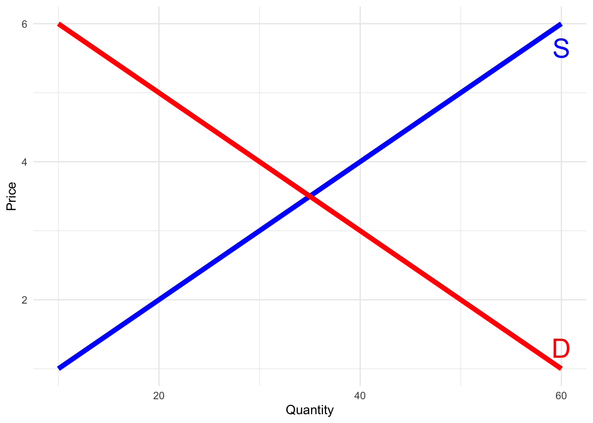

In general, if a good is desirable we will want more of it
However, sometimes products can be bads (instead of goods) and we would, obviously, want less of those
Where Does Demand Come From?
Imagine the market for coffee on campus
Additionally, imagine that the only other good that can be purchased is boba
On a basic level, demand for coffee is derived from individual’s choosing how to divide their income between coffee and boba
library(ggplot2)# Create data for the supply and demand curvesquantity <-c(10, 20, 30, 40, 50, 60)price_supply <-c(1, 2, 3, 4, 5, 6)price_demand <-c(6, 5, 4, 3, 2, 1)# Create a data framecurve_data <-data.frame(quantity, price_supply, price_demand)# Create the plotggplot(curve_data, aes(x = quantity)) +geom_line(aes(y = price_supply), color ="blue", lwd =2, linetype ="solid") +geom_line(aes(y = price_demand), color ="red", lwd =2, linetype ="solid") +labs(y ="Price",x ="Quantity" ) +theme_minimal() +annotate("text", x =60, y =5.65, label ="S", color ="blue", size =8) +annotate("text", x =60, y =1.3, label ="D", color ="red", size =8)

Where Does Demand Come From?
This is the problem we will be dealing with through the first half of the course
How does an individual allocate a finite amount of resources between two goods?
. . .
Note: There are clearly more than just two goods out there, so how can this be useful?
The main critique I always hear about economics courses is that they’re unrealistic. That’s mostly true, but we can learn about the aggregate by simplifying and making assumptions
Where Does Demand Come From?
We will frame the decisions as a two-good model where you may choose between:
Food and durable consumption
Leisure (not working) and consumption (paid for by earning a wage)
Consumption now and consumption later
The key takeaway here is that we can frame many important choices as “two-good” decisions
This makes things simpler for us to solve while still maintaining some sense of the real world
Determinants of Consumption
Consumption of any single good has two parts:
How it BENEFITS the consumer
We call this UTILITY
What it COSTS the consumer
What we give up to purchase the good
. . .
Let’s see what this means through a 1-good example \(\rightarrow\) Beer
Imagine the following scenario:
You just arrived at the bar and have had zero drinks so far
Each beer costs the same: $4
Beer is a great example of a good with complicated benefits
Beer
Number of Beers
Overall Level of Happiness
Change in Level of Happiness
0
0
-
1
10
10
2
25
15
3
35
10
4
40
5
5
42
3
6
30
-12
. . .
If beer were free, how many beers should this person drink?
\[5\]
Now recall that beer costs $4, how many beers should this person drink?
\[4\]
Intuition Behind “Choice” in Economics
You cannot simply find the consumption amount that makes you the happiest. But why?
. . .
The goal is to maximize your utility whilst acknowledging you have constraints
The choice is simple: consume an additional unit until the cost of doing so outweighs the benefit
. . .
Commit this idea to memory: it is the crux of economics and drives everything we will be doing
We maximize utility up to the point that it does not make sense to do so
Back to Beer
Number of Beers
Overall Level of Happiness
Change in Level of Happiness
0
0
-
1
10
10
2
25
15
3
35
10
4
40
5
5
42
3
6
30
-12
Some Questions:
What is the marginal benefit:
When you have not consumed any beer?
When you have already consumed 3 beers?
When you have already consumed 5 beers?
What is the marginal cost of beer?
Does it change as we consume more?
Being and Thinking at the Margin
We found two important values:
Marginal Benefit (MB)
The additional benefit gained for an added unit of consumption
Marginal Cost (MC)
The additional cost paid for an added unit of consumption
. . .
We can describe the decision-making process in a more formal manner:
Initially: MB > MC\(\rightarrow\) Consume more!
Eventually: MB < MC\(\rightarrow\) We went too far!
At some point: MB = MC\(\rightarrow\) Just right!
Ask yourself: Why must they be equal?
What’s Going On? Graphically
# Load the ggplot2 library if not already loadedlibrary(ggplot2)# Create a data frame with x valuesdata <-data.frame(x =c(0,1,2,3,4,5,6), y =c(0,10,25,35,40,42,30))# Create the ggplot objectutility <-ggplot(data, aes(x = x, y = y)) +geom_line(color ="black", size =2) +xlim(0,6) +labs(x ="Beers",y ="Utility" ) +theme_minimal()
Warning: Using `size` aesthetic for lines was deprecated in ggplot2 3.4.0.
ℹ Please use `linewidth` instead.
utility
. . .
What matters for choice is the marginal benefit of an additional beer
In other words, what matters is the change in utility that occurs as we move to the right on the graph
. . .
Recall: A change in \(y\) as \(x\) increases is the derivative
What’s Going On? Graphically - Derivatives
utility
The derivative of this function is the marginal benefit of beer
This is why derivatives are important
We can use derivatives to figure out the optimal amount to consume
What’s Going On? Graphically - MB & MC
utility
Recall: The optimal choice is the point where MB = MC
The MC = 4. So we would choose the quantity of beers where MB = 4
What’s Going On? Mathematically
The utility function of beer we’ve been using is:
\[U(x) = -x^{2} + 12x\]
Let’s practice: What would the optimal consumption amount be if the cost of beer is $2?